Обзор
В этом руководстве объясняется, как настроить ресурсы и экспортировать их из Maya в CRYENGINE с помощью Криинструменты которые доступны. Прежде чем приступить к работе, вам следует ознакомиться с Установка инструментов Maya и
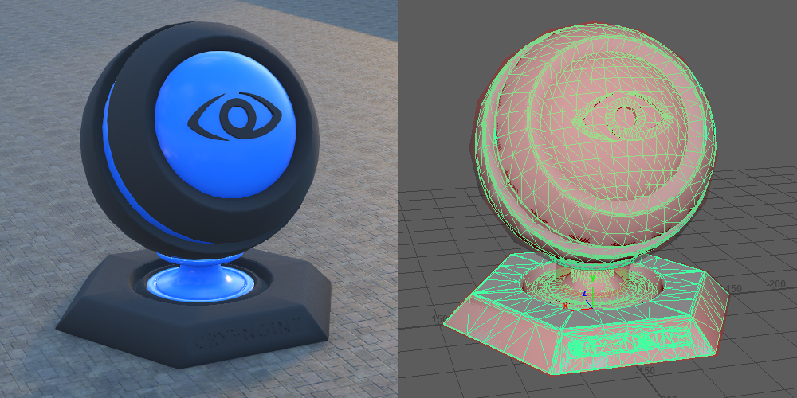
Учебные файлы
Исходная сцена Maya с экспортированными файлами CRYENGINE:
Предварительные требования для этого урока
Прежде чем продолжить изучение этого руководства, обязательно прочтите и усвойте следующие темы:
Начало работы
Обязательно помните о следующих вещах, пока создайте минимум элементов в сцене от Maya до CRYENGINE:
- В качестве единиц измерения необходимо указать сантиметры, а для FPS — 30.
- По крайней мере одна группа мирового уровня, названная cryExportNode_<имя_файла> должен быть доступен. <имя файла> будет именем файла экспортированного ресурса.
- Обязательно добавьте <cryengine_asset_name>_group в качестве родителя согласно cryExportNode. <cryengine_asset_name> — это имя ресурса при добавлении файла CRYENGINE.
- Создать Группа материалов с шейдером, назначенным экспортированной геометрии.
- Установите желаемый формат файла CRYENGINE, который зависит от назначения ресурса. Самым основным из них является *.CGF формат геометрии.
- Необязательно: настройка LOD и прокси (шаги, описанные в разделе руководства ниже).
После завершения моделирования и текстурирования нашей геометрии и назначения шейдеров для обнаружения столкновений потребуется прокси-геометрия. На данный момент прокси-геометрии назначен только стандартный Ламберт. Мы также создали уровни детализации (LOD1 и LOD2), это один и тот же ресурс с меньшим количеством полигонов, которые затем будут автоматически заменены CRYENGINE в зависимости от того, насколько далеко ресурс расположен относительно камеры, чтобы сохранить производительность.
Любой шейдер Maya можно назначить вашему активу CRYENGINE. Они работают только в Maya, и позже вам придется заменить их материалом CRYENGINE в Sandbox. Фонг шейдер, пожалуй, лучший выбор на данный момент.
Очень важно правильно называть геометрию. Maya идентифицирует все узлы сцены по строке имени, чувствительной к регистру. CRYENGINE автоматически преобразует имена в нижний регистр. Таким образом, не рекомендуется использовать одно и то же имя для двух объектов с разными регистрами, например, «Пропеллер» для геометрии и «Пропеллер» для ее шейдера.
Ресурсы CRYENGINE используют имена в нижнем регистре. Но Maya идентифицирует свои узлы по строкам имен, чувствительным к регистру. Поэтому избегайте различия объектов в сцене Maya с учетом регистра. Кроме того, не называйте никакие узлы мирового уровня как cryExportNode, поскольку это идентификатор записи для экспортера с Maya на CRYENGINE.
На изображении ниже показан пример геометрии шейдербола (LOD0 или сетка рендеринга) с двумя уровнями детализации и прокси физики/столкновений. На изображении ниже мы намеренно переместили LOD 1 и 2, а также прокси-сервер влево и вправо для лучшего различия. Нам нужно выровнять их обратно по LOD0 шейдерного шара, прежде чем продолжить обучение.
Пример геометрии шейдерного шара с выделенным LOD и прокси 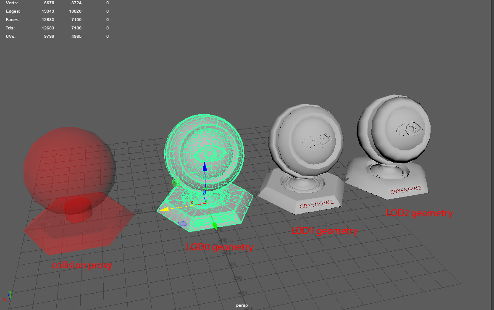
Текущая сцена в Outliner. Обратите внимание, что в мировом пространстве всё по-прежнему находится в плоской иерархии. Мы используем *_MSH суффикс для многоугольной геометрии в качестве соглашения об именах. Название объектов имеет значение, когда мы начинаем создавать cryExportNode группы.
Рис.3: Пример соглашения об именах для полигональной геометрии. 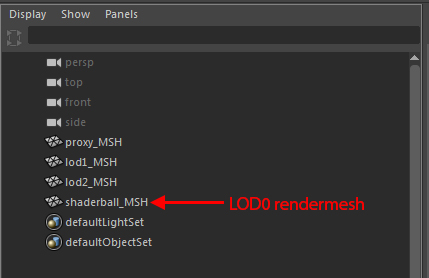
Построение базовой иерархии экспорта с помощью CryExportNode
Чтобы создать CryExportNode внутри Maya, нам нужно сначала выбрать геометрию, а затем выбрать Крайтек полку для инструментов и нажмите на Инструменты значок полки. Это откроет Плач Инструменты окно.
Выбор LOD0/сетки рендеринга шейдерного шара и запуск опции «Инструменты» на полке Crytek. 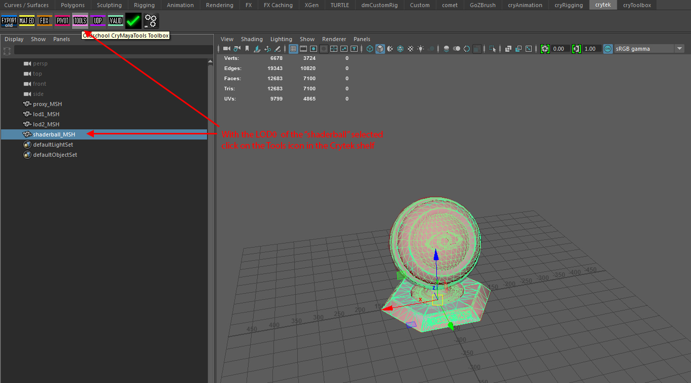
Теперь нажмите на Создайте CryExportNode, это создаст CrytekExportNode и открыть окно Создать CrytekExportNode. Теперь назовите наш актив, чтобы создать *.cgf файл. Убеждаемся, что тип файла установлено на Геометрия (.CGF) а затем нажмите на Создать кнопку в этом окне.
Создать CryExportNode Кнопка создаст пустой узел преобразования и пустую группу с суффиксом имени выбранного объекта.
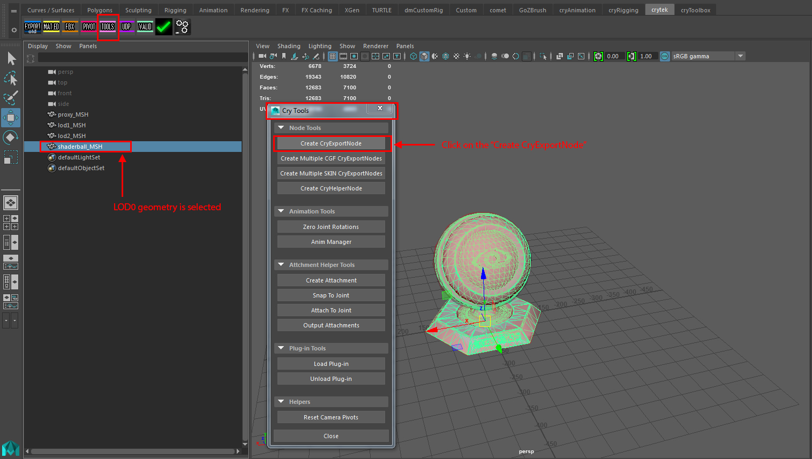
По умолчанию также будет создана следующая подгруппа с префиксом строки имени геометрии шейдерного шара. Формат экспорта по умолчанию CRYENGINE — это *.CGF файл, формат геометрии.
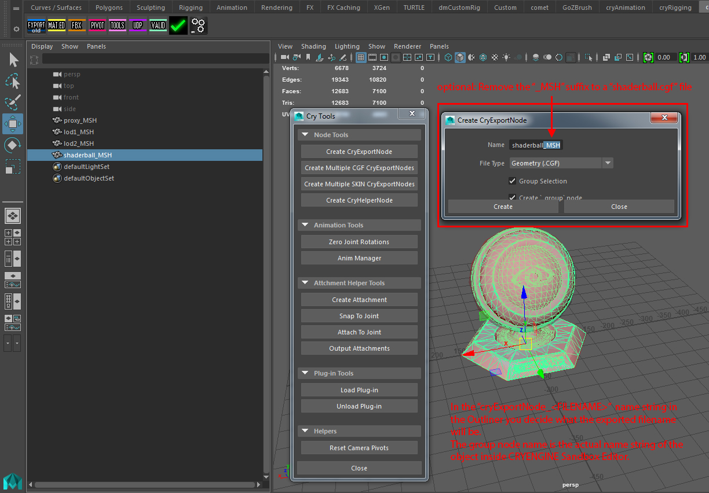
Если мы посмотрим в Планировщик, мы увидим, что cryExportNode_<name_of_file> был создан. Расширяя cryExportNode, мы видим, что внизу есть еще одна группа. Мы можем выберите актив и переместите его (с помощью средней кнопки мыши и перетаскивания) в группу, которая является родительской под «cryExportNode», если вы изначально забыли выбрать геометрию.
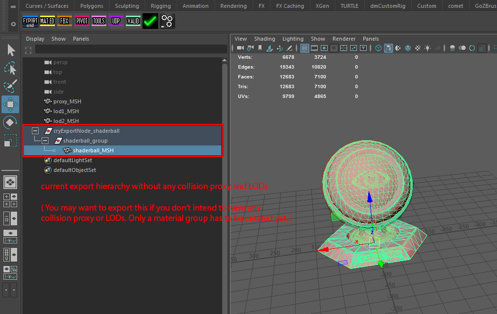
Расширение базовой иерархии экспорта с помощью прокси-сервера коллизий
Чтобы геометрия сетки LOD0/рендеринга взаимодействовала с физическими событиями в CRYENGINE, нам нужен прокси-сервер столкновений. Геометрия прокси должна быть построена с большой осторожностью, чтобы приблизительно соответствовать форме вашей сетки рендеринга. Его цель — заменить геометрию, чтобы сократить физические вычисления, необходимые между сеткой рендеринга и окружающей средой. Таким образом, сохраняя сложность геометрии вашего прокси как можно ниже. В качестве опции CRYENGINE предоставляет вам возможность использовать прокси-примитивы для улучшения производительности физики.
Самый распространенный способ настройки прокси-сетки:
- Родительская геометрия прокси под <your_asset_name>_group.
- Назначение шейдера прокси-геометрии, которая имеет дополнительный атрибут, называемый Физический, обычно Физический: ProxyNoDraw.
- Необязательно: добавление UDP, который также является дополнительным атрибутом, который позволяет пометить вашу прокси-сетку и заменить его прокси-примитивом CRYENGINE (коробкой, кубом, сферой, цилиндром или капсулой).
В этом уроке мы уже включили прокси-сетку для шейдерного шара. Чтобы правильно настроить геометрию нашего прокси-сервера коллизий, сначала нам нужно выбрать его в Планировщик, переместите его в ту же группу под cryExportNode поскольку наша основная геометрия является родительской.
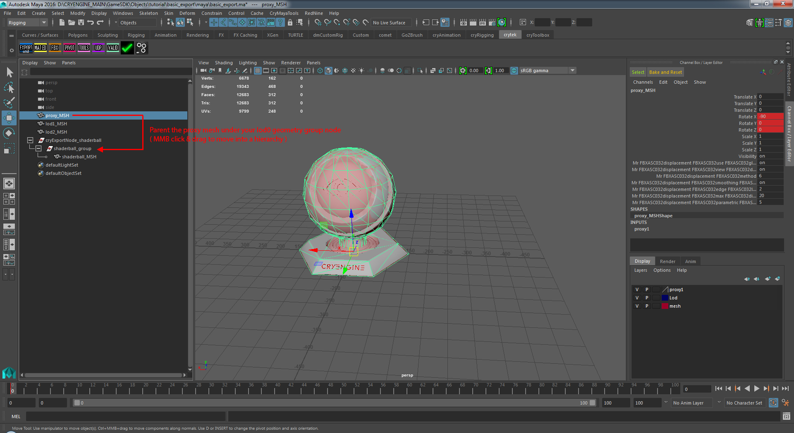
Иерархия cryExportNode, включая прокси-сетку. 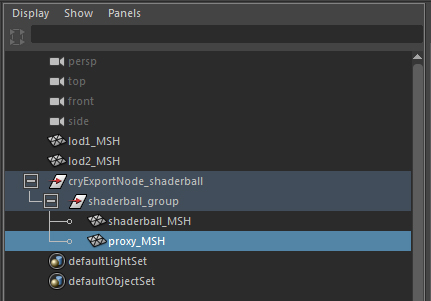
Настройка материала прокси столкновения
Следующим шагом мы открываем Гипертень и создать Фонг шейдер. Называем шейдер как proxy_SUB. Теперь откройте атрибуты шейдера и установите цвет на красный и его прозрачность примерно на 80%. Как только это будет сделано, мы сможем назначить этот шейдер нашему Прокси геометрия.
Примечание: Любые изменения параметров затенения здесь предназначены только для вашей сцены Maya. Экспортер CRYENGINE преобразует только настройки с назначениями шейдеров в вашу геометрию (объекты или грани) и игнорирует любые другие настройки материалов, созданные с помощью Maya.
Использование красного прозрачного прокси-шейдера для лучшего различения в Maya 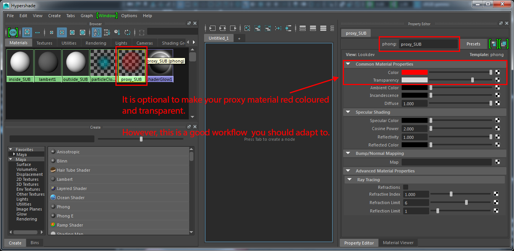
Назначение материала выбранной геометрии (отдельные грани или весь геометрический объект) 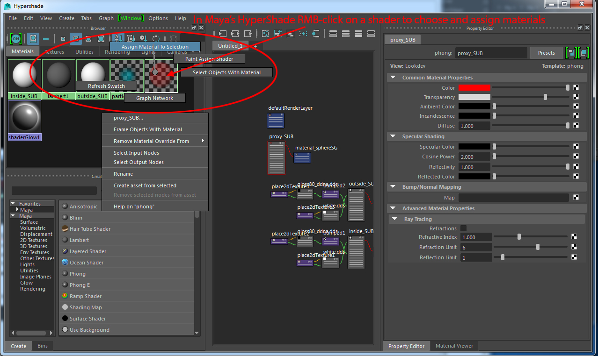
Физические дополнительные атрибуты для прокси-материала
Прокси-материал по-прежнему необходимо пометить как таковой для CRYENGINE. Это делается путем добавления Дополнительный атрибут в шейдер Maya.
Чтобы добавить дополнительный атрибут в шейдер.
- Откройте Экспортер из Крайтек Полка -> EXPORT значок полки. Выделите шейдер или любой объект с назначенным прокси-материалом.
- В верхней части окна Exporter нажмите на зловещий значок Добавить атрибуты кнопка. Эта кнопка добавит некоторые Дополнительные атрибуты в зависимости от выбранного типа объектов. Если это геометрия или шейдер, то шейдер получит Физически атрибут. Если это сустав, он получит дополнительные атрибуты для установки пределов вращения тряпичной куклы и демпфирования вращения.
- Теперь откройте Гипертень и выберите шейдер, который вы назначили своим прокси-объектам, и Атрибут Редактор нашего прокси-материала.
- Когда редактор атрибутов откроется, прокрутите вниз до Дополнительные атрибуты вкладку и разверните ее. Используя раскрывающееся меню рядом с Физически, установите его на ProxyNoDraw. Теперь наш прокси-материал помечен как CRYENGINE.
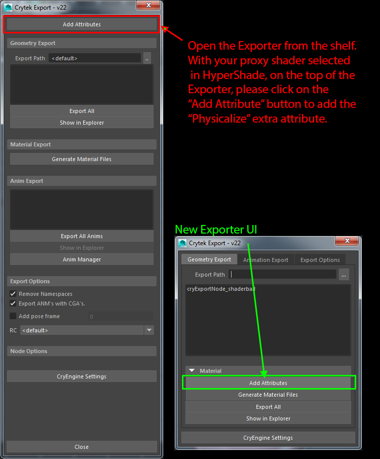
Использование вкладки «Редактор атрибутов» для пометки прокси-материала 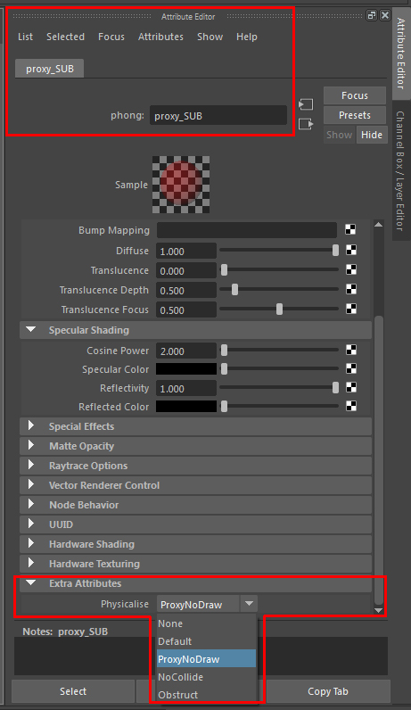
Прокси-примитивные UDP-протоколы
Для повышения производительности следует использовать только прокси-примитивы CRYENGINE (столкновения/физика). Вам необходимо создать свои собственные прокси-объекты, если они вам действительно нужны. Все не примитивные/собственные физические прокси должны иметь разумное количество полигонов. Чтобы объявить нашу прокси-геометрию как примитивный (для этого можно использовать только примитивную геометрию, такую как кубы, цилиндры, капсулы и сферы, и мы можем иметь столько примитивов геометрии, сколько нам нужно):
- Нажмите на Крайтек полка для инструментов, а затем нажмите кнопку с надписью UDP (Пользовательские свойства). Откроется другое окно и введите тип прокси-примитива, который мы хотим (Куб/Коробка, Цилиндр, Сфера или Капсула). Оставьте это поле пустым, если вы не хотите использовать прокси-примитивы.
- Теперь нажмите Сохранить и закрой окно. Теперь наша геометрия прокси определена как примитив столкновения прокси и будет отображаться и использоваться как таковая.
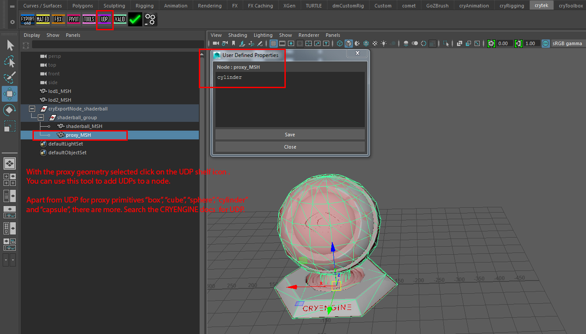
Ниже приведено видео, показывающее, как настроить прокси-серверы коллизий в Maya:
Настройка групп материалов
Чтобы экспорт актив успешно перенесен из Maya в CRYENGINE, нам нужно настроить Группа материалов. Группа материалов содержит все материалы, присвоенные геометрии, и материалы пронумерованы. Поскольку наследие CRYENGINE тесно связано с 3ds Max, мы видим группу материалов как Multi/SubMaterial, а шейдеры, сгруппированные под ней, как SubMaterials. Это также влияет на настройку прокси-материала, поскольку нам необходимо включить его в группу материалов.
Чтобы настроить группу материалов:
- Выберите нашу основную геометрию и прокси-геометрию. Выбрав нашу геометрию, нажмите кнопку Крайтек полку, а затем нажмите на MAT.ED значок полки. Это открывает Группы материалов окно.
- В окне «Группа материалов» нажмите кнопку Создать группу и назовите группу материалов. Имя группы должно быть похоже на имя в cryExportNode, а затем нажмите ок. Теперь вы можете увидеть название группы затенения в левом столбце под Группы материалов.
- Чтобы загрузить шейдеры, которые в данный момент назначены геометрии, щелкните правый столбец. Шейдеры на Добавить шейдеры из выбранного геометрического объекта. Как вы можете видеть, он загружает материалы, назначенные нашей геометрии, и присваивает им идентификаторы.
- Для повторного заказа материалов необходимо выбрать материал в Шейдеры окно и нажмите на кнопки Переместить шейдеры вверх/Переместить шейдеры вниз.
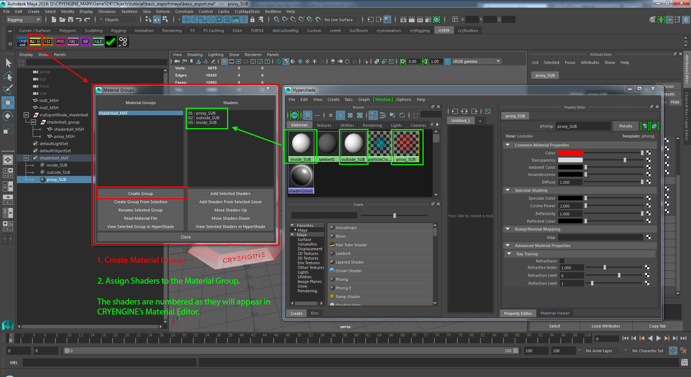
Окончательный вид вновь созданной группы материалов. 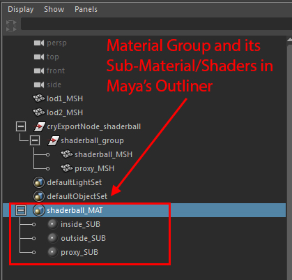
Создание групп LOD
Чтобы создать группы LOD, сначала создайте пустую группу под узлом, который является родительским по отношению к узлу. cryExportNode и назови это как _lod1_assetName_group. Для последующих LODов вы можете назвать их как _lod2_assetName_group, _lod3_assetName_group, и т. д. В Maya можно создать пустую группу, зайдя в меню Создать -> Пустая группа и переименуйте его потом.
Как только у нас появятся группы LOD, создайте родительскую геометрию LOD в соответствующей группе. Как видите, важно пометить как LOD только имя узла родительской группы, а не сам узел сетки.
Размещение пустых родительских групп LOD1 и LOD2 в мировом пространстве. 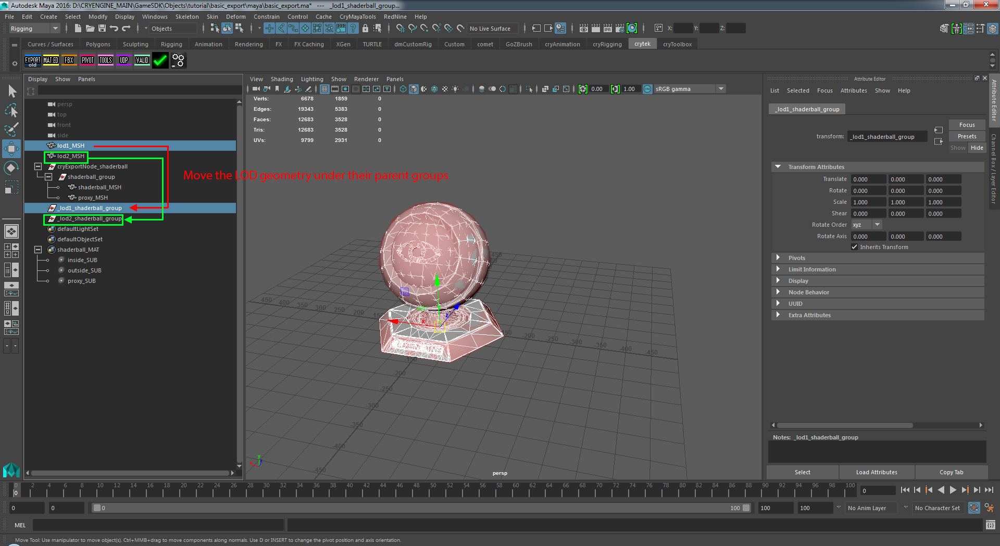
Выбор групп LOD1 и LOD2 и родительских узлов сетки LOD под ними. 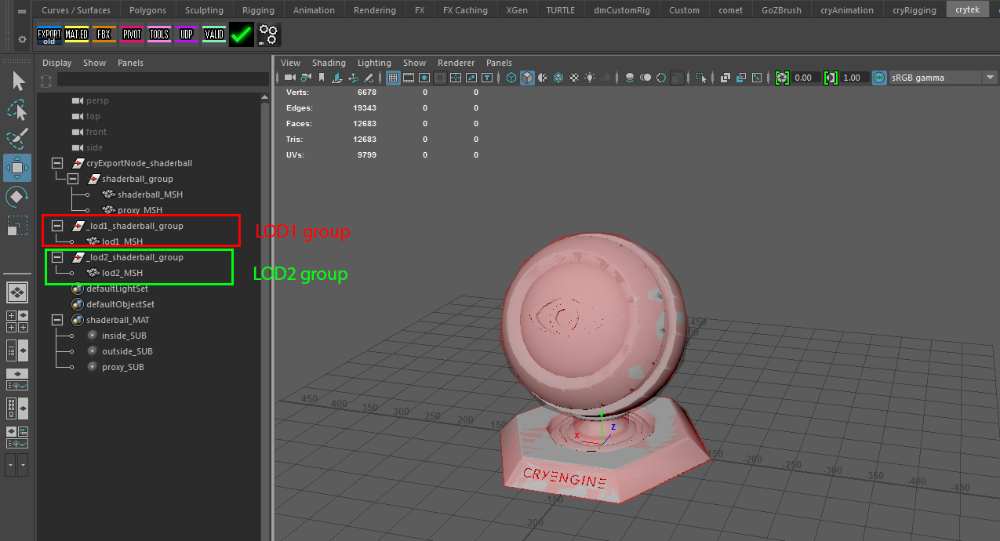
Размещение групп LOD в подгруппе cryExportNode. 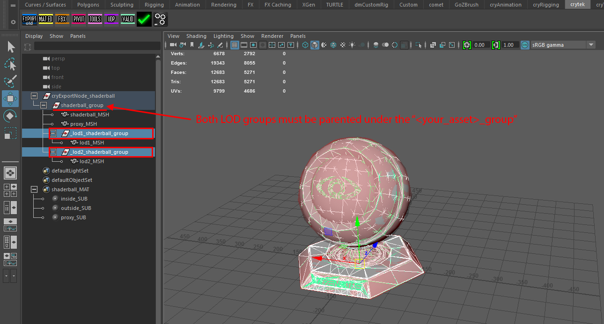
Экспорт ресурса из Maya
Теперь, когда у нас все настроено, мы собираемся экспортировать ресурс из Maya. Для этого перейдите в Крайтек полку, а затем нажмите на Экспорт значок полки, чтобы открыть Крайтек Экспорт окно. Экспортер будет автоматически искать любые группы корневого уровня с именем cryExportNode_* и отобразить группы в списке. Когда вы щелкаете правой кнопкой мыши по списку, у вас появляется больше функций, например, вручную обновить список после изменений.
Нажмите на Экспортировать выбранное кнопка. Теперь геометрический ресурс будет экспортирован в то же место, что и наш сохраненный файл сцены Maya.
Экспорт шейдерного шара cryExportNode в файл *.CGF. 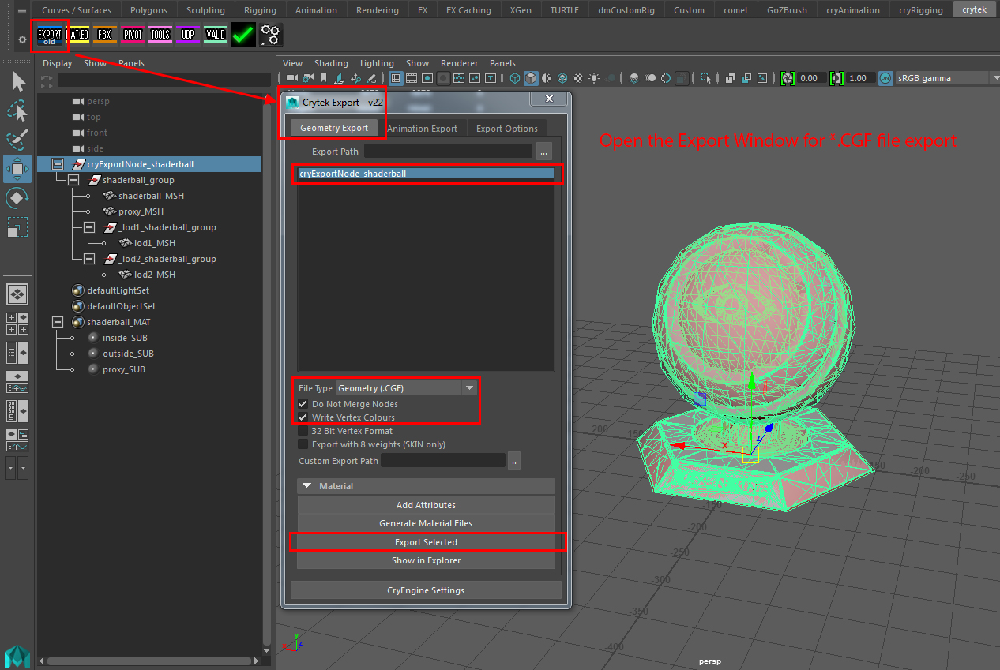
В Экспортере нажмите Создать файлы материалов кнопку, это сохранит CRYENGINE *.MTL файл в том же месте, где вы сохранили файл сцены Maya. Рекомендуется сохранить название материала, похожее на ваш актив, например, shaderball.cgf геометрия должна сопровождаться shaderball.mtl файл материала.
Экспорт материала шейдербола в файл *.MTL файл. 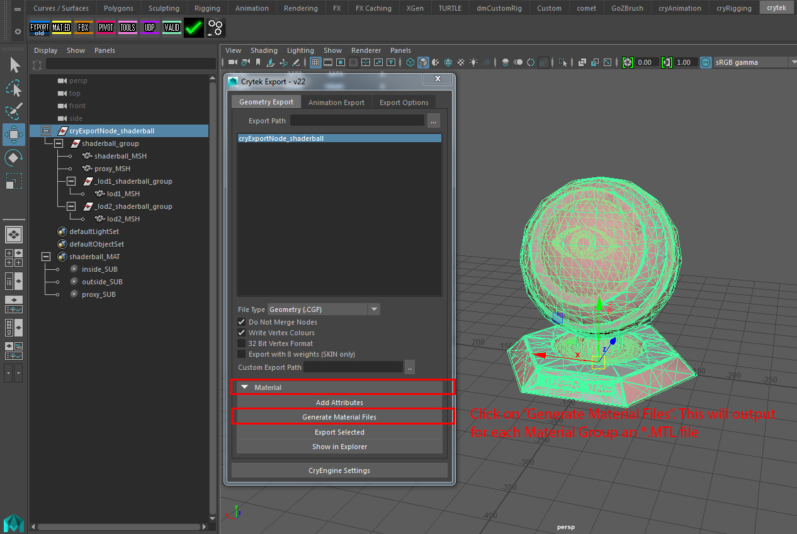
Загрузка и проверка актива в CRYENGINE
Открыть Sandbox.exe из установленной папки CRYENGINE и создайте пустой уровень или откройте уровень, над которым вы работали ранее.
Создать объект
Чтобы загрузить ресурс в Sandbox:
- Перейти к Создать объект дополнительное окно.
- Выберите экспортированный ресурс CGF и перетащите его на уровень.
- Если вы закрыли Создать объект окно, перейти к нему можно с помощью строки главного меню: Инструменты -> Редактор уровней -> Создать объект.
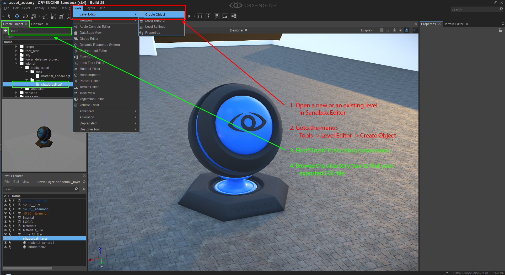
Просмотр экспортированный шейдерный актив 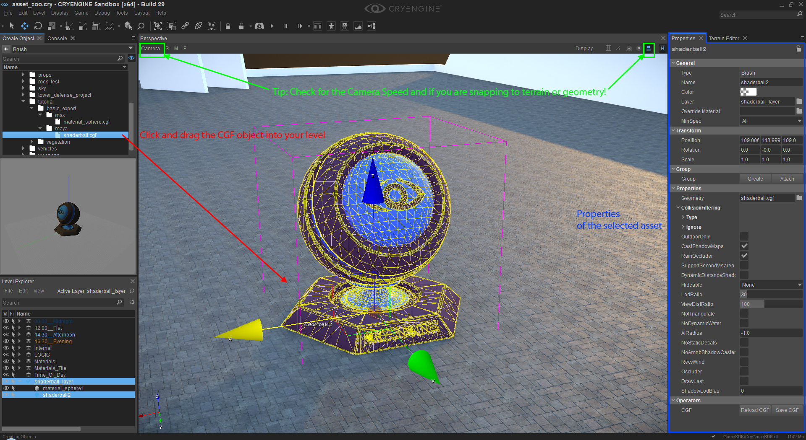
Material Editor
Чтобы проверить, все ли экспортировано правильно, откройте файл Material Editor. В редакторе должен быть виден основной материал (группа затенения) и все подматериалы (материалы, которые были назначены нашей геометрии). Прокси-материал должен быть в первом слоте.
Вы не увидите материал, поскольку для него установлено значение noDraw, поэтому он невидим. Выберите каждый подматериал и загрузите правильные текстуры в нужные слоты. Как вы можете видеть, прокси также присутствует и определен как примитив CRYENGINE..
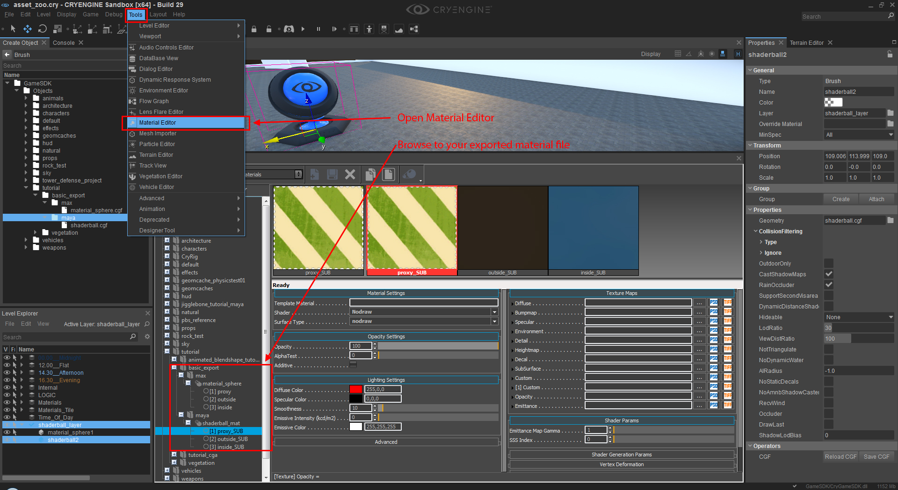
Вариант отображения прокси
Истинные прокси-примитивы CRYENGINE отображаются серым цветом без треугольных краев граней. Непримитивные/пользовательские прокси-объекты имеют каркас, отображаемый поверх серой заливки.
Отображение прокси столкновений в окне просмотра 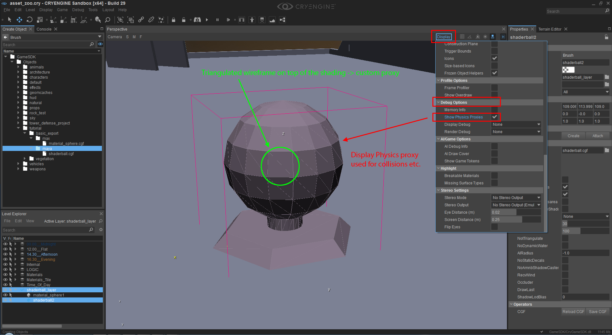
Геометрия прокси обычно закрашена серым цветом. Однако, если вы видите, что прокси медленно мигают красным и серым, вам рекомендуется уменьшить количество полигонов или перестроить геометрию прокси (состоящую из нескольких элементов) в одну непрерывную часть. Хотя это не является обязательным, в некоторых случаях физические события могут вести себя неправильно.